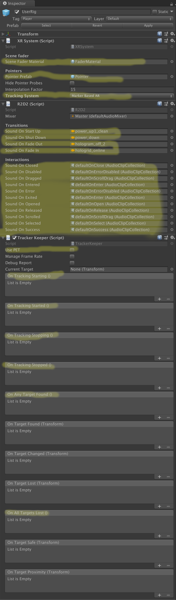

Introduction
Juniper is a framework within Unity 3D for managing and developing virtual, augmented, and mixed reality applications, within the context of a metaphor of the human body. It provides the following sub-modules:
- Data - Managing HTTP requests and streaming assets, all from background threads that do not lock up the main UI thread.
- Ground - Terrain rendering and AR surface reconstruction base code.
- ImageTracking - Image-marker tracking base code.
- Input - Base-code for handling user input.
- NeuroSky - Wrapper code for handling the NeuroSky MindWave device.
- Progress - Interfaces for representing progress meters.
- Statistics - Collections that perform statistical analysis on their contents.
- Units - Conversions between and formattings of values tagged with units of measure.
- Unity - Components and implementations for the Unity platform.
- Anchoring - Components for fixing objects in space, with persistence on AR platforms.
- Animation - Basic animations on specific, common object properties, without having to engage the full power of Mecanim.
- Audio - Audio management and effects components.
- Collections - Unity-specific collection manipulation code.
- Display - Components for managing VR and AR display modes.
- Events - Custom UnityEvent classes that pass a few primitive values as event arguments.
- Ground - Concrete implementations of AR surface reconstruction and terrain rendering.
- Haptics - Components for performing high-quality haptic feedback on systems that support it.
- ImageTracking - Concrete implementations for platform-specific marker tracking.
- Imaging - Loading and processing PNG and raw images.
- Input - Handling user input: keyboard, mouse, touch, motion controllers, and speech.
- LightMapping - Swapping light map sets at runtime to have different, baked lighting conditions without switching scenes.
- Progress - Implementations of the IProgress interface for use in Unity experiences.
- Statistics - Statistical analysis collections for Unity's Vector structures.
- Widgets - Visual elements with which the user may interact.
- World - Components for understanding and integrating with the real world: light estimation, global positioning, translating between spatial reference systems, receiving weather reports.
- UnityEditor - Components that run in the UnityEditor itself, with custom editors for a few of Juniper's components.
- ConfigurationManagement - Listings of VR and AR platforms, their dependencies, and a dependency manager for automatically converting Unity projects between different platforms.
- World - Physical world units and data.
- Climate - Code relating to weather reporting.
- GIS - Latitude/Longitude points and conversions to different coordinate frames.
Setup
Installation
There are two ways to install Juniper.
Project Integration
There are a number of different components that go into configuring a Juniper application:
- The AR or VR subsystem needs to be setup for use.
- The EventSystem needs to be configured,
- along with an InputModuel that understands different types of 3D pointers, and,
- those pointers appropriate for the XR subsystem.
- The user-interface interaction feedback audio system, which includes haptic feedback.
- A manager for AR targets, if they are being used.
- Mouse and Keyboard movement for use in the Editor.
- A camera configuration that,
- updates the clear flags when switching between types of XR subsystems, and
- reduces rendering quality to keep the target frame-rate as close to the native display refresh rate as possible.
- And, a graphical component for fading views in and out during scene transitions and other long, blocking operations, so the user doesn't see the camera locked in place.
To that end, there is a Prefab that has most of this pre-configured, requiring only project-specific configuration once included in the project. It is located at
Juniper/Prefabs/UserRig.prefab
The prefab contains the following GameObjects and Components:
- [GO] UserRig: The root of the prefab
- [CMP] XRSystem: manages system configuration and AR/VR feature sets.
- [CMP] EventSystem: Unity's EventSystem component for triggering pointer events.
- [CMP] UnifiedInputModule: A custom InputModule that fuses a variety of different pointers between the computer mouse, the touch screen, and any potential motion controllers or hand tracking systems connected to the application.
- [CMP] Mouse: The mouse pointer, mostly only used in the Editor.
- [CMP] Touches: Invisible pointers for each finger.
- [CMP] TrackerKeeper: A top-level manager for AR image targets, with event handlers for a variety of different scenarios in managing the AR experience.
- [CMP] R2D2: Configuration setting for different audio clips to playback during different types of user interactions in the system. This also provides haptic feedback for most of the interaction types.
- [GO] Stage: The immediate area around the user, separate from the camera. Keyboard/GamePad movement, or VR teleportation will move the stage instead of the camera. Moving the camera is reserved for the XR subsystem, to maintain the right view angle for the user.
- [CMP] KeyboardMovement: Moves the stage with Unity's configured keyboard movement keys in the direction the camera is looking. Mostly only used in the Editor for testing.
- [GO] Camera: The main camera.
- [CMP] Camera: The main camera component. You may want to configure the Clipping Planes. Do not change the Field of View, as it will be ignored and recomputed at runtime for the specific XR subsystem.
- [CMP] CameraExtensions: Manages camera attributes like camera FOV.
- [CMP] QualityDegrader: Projects start out at the highest quality setting and degrade through the quality settings enabled in the Editor until either there are no more quality setting to go through or the app consistently hits 60FPS.
- [CMP] PhysicsRaycaster: The raycaster used for all pointers that fire through the main camera, including the Moues and Touches.
- [GO] Fader: A box that sits around the user's head for fading the camera view in and out in a way that works on all XR subsystems.
- [CMP] Darth: Darth Fader is the component that manages fading of the camera view. You can retrieve Darth Fader and use it to fade out the screen if you ever have any long, blocking operations that could lock up the camera.
Configuration
Once you have the UserRig prefab in your scene, select the UserRig game object and find the XRSystem component. Pay the most attention to the highlighted fields:

Notes:
- Make sure to set the TrackingSystem on XRSystem. It will initially be set to None.
- Additionally, if this is the first time you are setting up a Vuforia-based project and you select the "Marker Based AR" tracking type, you may need to use the GameObject menu in Unity to add a Vuforia prefab in order to force the Vuforia components to install into your project. You may delete it afterwards.
- R2D2 will be configured with a default set of sounds that come with Juniper. These sounds are Star Trek sound effects, so they will not be appropriate to deploy to a production system. Make sure you find a new set of sounds appropriate for your application.
- TrackerKeeper has a number of interesting events for managing your project workflow. It's recommended that you run Vuforia in Delayed Initialization mode, so your application can start with a splash-screen/menu view without the camera constantly running an draining the battery.
Development
Clone the repository and copy the Package/ directory to one of the Test/<PlatformName>Test/Assets directories.
Tools
- Unity Hub. Unity Hub is very handy for managing different versions of Unity between different projects. There is also a link in Unity Hub to the Unity Download Archive for any version that Unity does not advertise through the Available Installs screen.
- For Magic Leap: Magic Leap maintains their own fork of the Unity Editor. It's currently an older version of Unity that is not compatible with the new Nestable Prefabs system, so be careful not to mix versions. You can upgrade from 2018.1 to later versions, but your scenes and prefabs will crash the editor if you try to downgrade. For that reason, there are copies of scenes and prefabs in the Juniper project specifically for Unity 2018.1.
- Visual Studio. Unity can install this by default for you.
- Blender. There are a few 3D models in the project repository that Unity requires Blender to be installed to be able to import them.
- Toudor. The issues list for Juniper is maintained as a
todo.txt file in the root of the project. Toudour provides a nice GUI for editing the list.
- Doxygen. This is only necessary for updating the documentation in Juniper, but it's a good idea to use it on your projects, too. Make sure to add it to your PATH.
- GraphViz. This is used by Doxygen to generate nicer diagrams for the documentation. Make sure to add it to your PATH.
- scc. This is used by the documentation generation scripts to estimate the project complexity. Make sure to add it to your PATH.
Debugging
The prefab at:
Juniper/Prefabs/DebugUI.prefab
Contains a Canvas and Text element that is used by the various components to print out their status.
GPSLocation, SunPosition, Weather, and OutdoorLightEstimate all have boolean values controlling whether or not they provide real world values versus static values defined at design time. That boolean is called Fake <X>, where X is whatever property is being faked. They also include a boolean called Print Debug Report that enables showing the current status of the component on the ScreenDebugger.
Platform Notes
These are notes specific to each AR subsystem and/or operating system
Hololens
Build settings
The Hololens documentation talks about a Unity Build setting "C# Projects" that enables completing the build and deploying to the device from Visual Studio rather than from Unity. The rationale for this feature is that it makes it faster to iterate on changes to scripts. If you want to make changes to the scene, to any assets, or add any scripts, you need to still do it through Unity.
As of Version 2017.2 of Unity, this feature is broken, defaulting the Build Target Architecture to ARM. Just manually change the architecture to x86 (not x64).
Code Metrics
Juniper
───────────────────────────────────────────────────────────────────────────────
Language Files Lines Code Comments Blanks
───────────────────────────────────────────────────────────────────────────────
C# 71 9028 4747 3466 815
───────────────────────────────────────────────────────────────────────────────
Total 71 9028 4747 3466 815
───────────────────────────────────────────────────────────────────────────────
Estimated Cost to Develop $270,920
Estimated Schedule Effort 7.240829 months
Estimated People Required 2.267785
───────────────────────────────────────────────────────────────────────────────
Juniper.Unity
───────────────────────────────────────────────────────────────────────────────
Language Files Lines Code Comments Blanks
───────────────────────────────────────────────────────────────────────────────
C# 296 33233 22871 5957 4405
───────────────────────────────────────────────────────────────────────────────
Total 296 33233 22871 5957 4405
───────────────────────────────────────────────────────────────────────────────
Estimated Cost to Develop $1,412,055
Estimated Schedule Effort 13.559753 months
Estimated People Required 6.311718
───────────────────────────────────────────────────────────────────────────────
Juniper.Units
project site
───────────────────────────────────────────────────────────────────────────────
Language Files Lines Code Comments Blanks
───────────────────────────────────────────────────────────────────────────────
C# 100 11647 5081 5210 1356
───────────────────────────────────────────────────────────────────────────────
Total 100 11647 5081 5210 1356
───────────────────────────────────────────────────────────────────────────────
Estimated Cost to Develop $290,970
Estimated Schedule Effort 7.439962 months
Estimated People Required 2.370423
───────────────────────────────────────────────────────────────────────────────
Juniper.NeuroSky
project site
───────────────────────────────────────────────────────────────────────────────
Language Files Lines Code Comments Blanks
───────────────────────────────────────────────────────────────────────────────
C# 35 964 634 207 123
───────────────────────────────────────────────────────────────────────────────
Total 35 964 634 207 123
───────────────────────────────────────────────────────────────────────────────
Estimated Cost to Develop $32,718
Estimated Schedule Effort 3.242878 months
Estimated People Required 0.611523
───────────────────────────────────────────────────────────────────────────────

 1.8.15
1.8.15